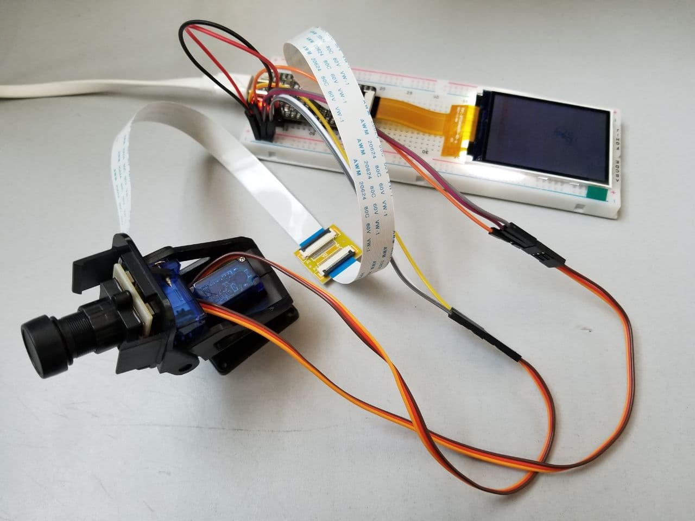
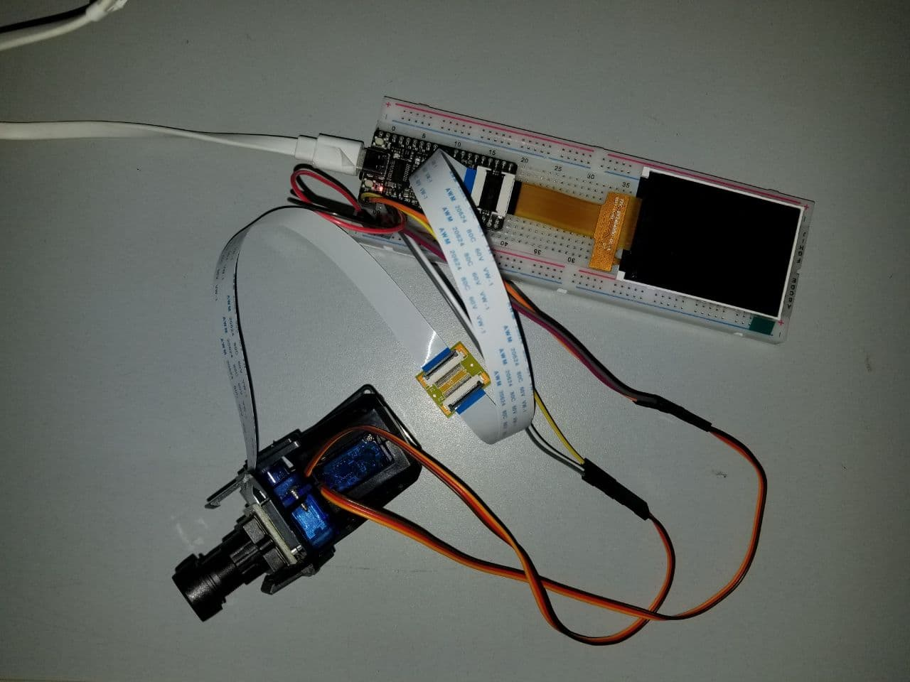

K210 面部追踪小尝试
前言
最近偶然得知一个名为 K210 的 MCU，带有 RISC-V 架构的处理器，而且芯片中自带了一个自研的神经网络加速器，称为 KPU，允许进行高效卷积神经网络计算（据嘉楠官方数据，可以达到 0.8 TOPS）。于是萌生了一个用 K210 控制 SG90 伺服电机（舵机），上面放个摄像头，检测人脸然后伺服电机进行跟踪，拍照存储到 microSD 卡的奇怪想法；然后不知不觉间就下手了 Sipeed MaixBit，OV2460 摄像头，SG90 伺服电机以及一大堆乱七八糟的线缆面包板等配件（剁手ing）。用基于 MicroPython 的 MaixPy 进行开发（Python 真香，才不是因为懒以及我在 MaixBit 上运行了好几个勘智的官方 C 例程都失败了）。
PS: 本文不会讲述如何给 MaixBit 刷入 MaixPy 固件以及 MaixPyIDE 的使用方法等，请参考官方文档。
硬件参数
MaixBit
- 双核 64 bit RISC-V RV64IMAFDC CPU / 400MHz （集成双精度 FPU, AES, SHA256 加速）
- 8MiB 64bit 片上 SRAM
- 16 MiB Flash，板载 micro SDXC 接口 （最大支持 128 GiB）
- 板载 DVP 摄像头接口和 LCD 接口，都是 24 Pin FPC 底座（0.5mm 间距）
更多信息可以参阅 Sipeed MaixBit Datasheet。
OV2640
- 320 × 240 分辨率
- 200W 像素
- DVP 接口（FPC 24 Pin 0.5mm）
- 支持 YUV422 颜色模式
- 手动变焦
PS: 其实官方对 OV5640 的支持要更完善一点点，支持自动变焦和 RGB565 颜色模式（甚至可以配广角镜头），而且价格也没有比 OV2640 高到哪里去，打算以后弄个来玩玩（再次剁手预备）。
摄像头选型可以参考 这个文档。
SG90 伺服电机
- 无负载速度: 0.002s/度 （4.8V）
- 堵转扭矩: 1.2-1.4 kg/cm（4.8V）
- 死区设定: 7us （7 MHz）
- 工作电压: 4.8 - 6V （我之前脑抽插到了 3.3V 供电上，死活不动。。所以使用前仔细阅读说明书是个好习惯）
- 位置等级: 1024
- 脉冲精度: 2us
该伺服电机需要 MCU 产生持续 20ms 的脉冲信号，以持续 0.5ms ~ 2.5ms 的高电平来控制角度，大概可以用下表来表示
| 高电平时间(ms) | 角度 | 占空比(%) |
|---|---|---|
| 0.5 | 0 | 2.5 |
| 1.0 | 45 | 5.0 |
| 1.5 | 90 | 7.5 |
| 2.0 | 135 | 10.0 |
| 2.5 | 180 | 12.5 |
PS: 有关 PWM 的知识可以在网上搜索得到。我使用的驱动器是两个 SG90 组成的，可以实现水平 180 度和垂直 90 度的运动。
标题不存在
先上两张图吧，这是我搭好的（不要在意为什么这么丑）。


0x00
具体的 IO 定义可以参考上面的 MaixBit 规格文档，这里以 IO 编号说明。
水平伺服电机 PWM 连接 23 管脚，垂直伺服电机连接 22 管脚，两个电机均接入 MaixBit 的 5V 供电管脚（推荐使用额外的电源，如果是在电脑 USB 接口上调试且电机运动激烈，容易导致 MaixBit 欠压重启）。
0x01
因为个人的习惯（懒得用配置文件），开始先定义一些常量，初始化一些对象，方便后面的代码复用这些东西。
1 | CAMERA_VFLIP = 1 |
VFLIP 和 HMIRROR 用来控制摄像头的水平及垂直翻转，具体定义可参考 MaixPy 文档的 sensor。CENTER_POINT_xxx 指的是图像中心点的 X, Y 坐标，跟踪是以这个点为基准，要求目标的中心点在这个点的一定范围内。TRACE_DELTA_RADIUS 是目标中心点与图像中心点的允许位置偏差，当目标的中心点与图像中心点的距离超过这个值时，将控制伺服电机跟踪目标。PHOTO_SAVE_PATH 表示拍照时的存储路径，设为空可以关闭拍照的功能。
1 | # Initialize Servo Motor |
定义伺服电机管脚和默认位置，设置电机的运行范围，最后用 PWM 类实现对特定管脚的 PWM 输出，控制对应的电机（由于我的垂直伺服电机比较特殊，最大角度只有 90 度但是 PWM 占空比还是 2.5 ~ 12.5，这部分需要根据自己的电机来实际确定）。
后续的初始化面部检测模型，摄像头，LCD 以及在 KPU 中加载模型，均为 MaixPy 中的官方例程，我就懒得打了，反正最后会放上完整代码。
0x02
我比较喜欢在用类，可以避免写出一大堆 nonlocal 啊，global 之类的东西。
1 | class FaceTrack: |
- 为什么要自定义
*_duty来存储 PWM 的占空比？直接用duty()读取占空比然后再计算不香吗？我之前也是这么想的，然后踩了坑，因为从 PWM 对象的duty()函数直接读取当前占空比时，返回的是一个整数，无法精确控制占空比（伺服电机跟疯了一样要么不动要么直接瞬移），此时需要自己定义变量来存储当前的精确占空比，方便精确控制伺服电机。 last_save_time是最后一次拍照存储的时间戳，用来控制拍照间隔。lost_face_time是最后一次检测不到面部的时间戳，用以在丢失目标时让伺服电机复位。
1 | def reset_servo_motor(self): |
reset_servo_motor用于复位电机位置，在丢失目标后调用move_hori_servo_motor控制水平电机，检测目标的水平位移并进行跟踪，其中h_duty_delta是经过计算转换后的 PWM 占空比改变量，其算法为计算水平改变量在图像大小中的比值，然后乘以水平电机的最大可用占空比与最小可用占空比的差值，最后乘以一个比例，经过我的多次测试这个值在我这里应设为0.2比较合适，既能保证平稳跟踪目标又不会使电机运动幅度过大；同理有一个move_vect_servo_motor控制垂直电机的运动。
1 | def loop(self): |
程序主循环，在每次循环开始或结束时，千万一定必须要执行 gc.collect() 来回收垃圾，否则有极大可能导致内存溢出程序崩溃。这部分代码在每次循环时从摄像头获取图像，执行识别，拍照存储，控制伺服电机等，具体可阅读代码（没错就是我又懒得敲详细内容了）。
小结
这次也是尝鲜，用 Python 写了一下 K210 的程序，发现 K210 确实很强大，便宜（单块 K210 BGA 封装只要 20 块不到）低功耗且性能强大，但是由于 Python 的性能问题导致无法跑高精度模型，下一步打算学习勘智的 C SDK 并尝试把这篇文章中写的东西复刻一下，提高一下自己 C 的水平。